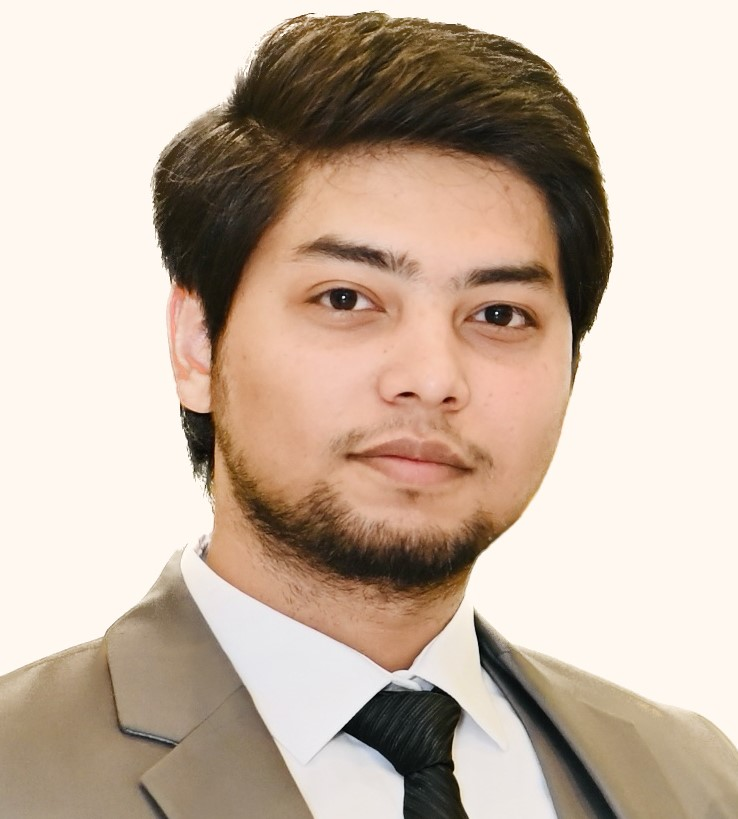

Asad Wasim

Contact
Objective:
Seeking job opportunities for web development and frontend design
at any leading IT company or Software house where I can put my IT
education and computer science skills to assist the company in
completing different projects.
Education:
- Bachelor Degree of Information Technology,University of Sargodha (2015-2019)
- Intermediate Degree in ICS, Punjab Group of Collages(2013-2015)
Work Experience:
-
Pacific Pharmaceuticals Limited - (2019-2021)
- Website design and development
- Maintenance of existing websites
- Designing and developing digital literatures for tablets
-
Greydient - (2021-2022)
- Work with graphics and other designers to match visual design intent.
- Website layout design and development Completed e-commerce, portfolio, membership, fitness, business, and course websites.
- Identified and resolved all website and server related errors and problems.
- Maintain and update websites.
-
Al-Kabir Developers - (2022-Current)
- Work with graphics and other designers to match visual design intent.
- Website layout design and development Completed e-commerce, portfolio, membership, fitness, business, and course websites.
- Ensure the interfaces, UI and the user experience remain the same on all browser and device types.
- Staging the website and split testing.
- Identified and resolved all website and server related errors and problems.
- Maintain and update websites.
Skill:
- HTML
- CSS
- PHP
- Javascript
- SEO
- Wordpress
- Adobe XD
- Lightroom
- Illustrator
- Photoshop
Awards and Achievements:
- Certified Event Organizer from Expo Center Lahore
- Head of Cultural Society University of Sargodha